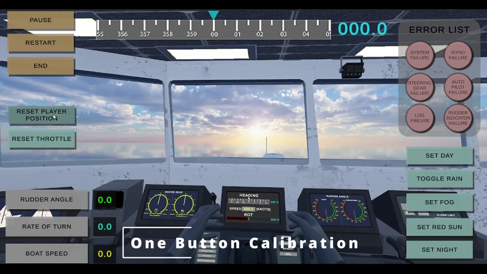
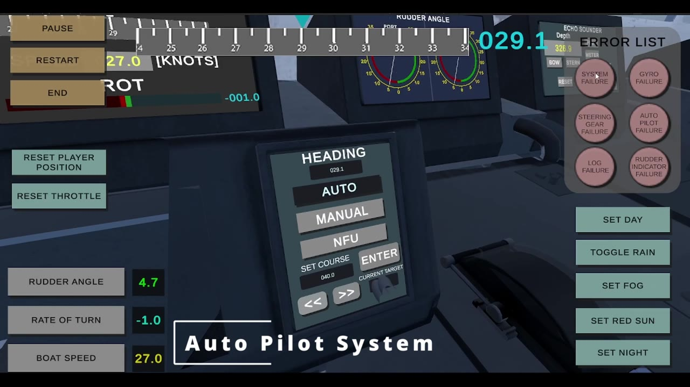
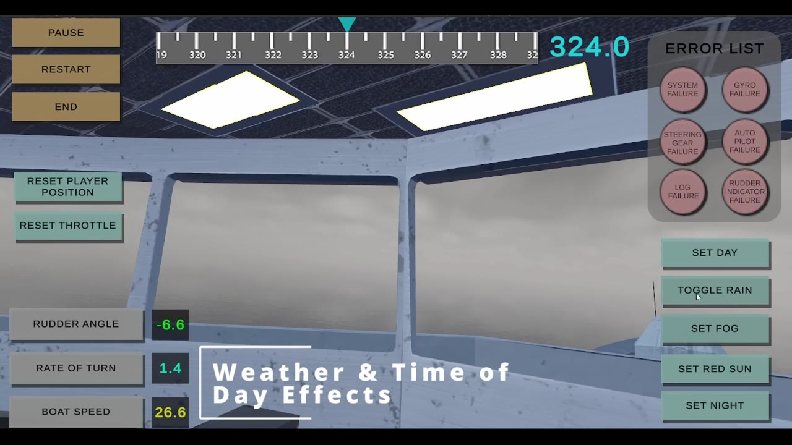

VR TRAINING · ROYAL NAVY
Helmsman Simulator
A virtual-reality trainer that teaches recruits to operate the helm of a Type 45 Destroyer — built for our client MetaverseVR to deploy for Royal Navy training.
Overview
The brief was to design a simple, believable simulator that trains recruits on the helmsman role aboard a Type 45 Destroyer — replicating the real bridge closely enough to build muscle memory before they ever step aboard a ship.
I was the lead designer and producer on the group project. The result was strong enough that our client, MetaverseVR, intended to put it into service for Royal Navy helmsman training, and the work contributed to my degree and a TIGA Graduate of the Year finalist nomination.
Design goals
- A bridge environment that replicates its real-world counterpart, so the layout itself becomes part of the training.
- Lifelike inputs — wheel for rudder, throttle for thrust — to build muscle memory rather than abstract button-pressing.
- Realistic physics that accurately replicate the movement of the destroyer.
- A supervisor interface to inject faults (gyro, steering gear, autopilot, rudder-indicator failures) and change conditions — day, night, fog, rain.
- Recording functionality so supervisors can review and assess a recruit's performance afterwards.
What I designed
- Owned the design vision and production, coordinating a small team from concept document to working build.
- Designed the dual-display supervisor UI — live readouts for rudder angle, rate of turn, boat speed and heading, plus a fault-injection panel.
- Specified the input model: wheel and throttle processed locally on PC, hand-tracked buttons via the XR Hands plugin on Quest 3.
- Mapped the environment to the real space using image-reference anchoring so the virtual helm lines up with the physical training area.
Selected views



Video demos
More material from my YouTube channel: build walkthroughs, training footage and project demos that add context to the Helmsman Simulator.
See the full channel for more behind-the-scenes work and XR demos: youtube.com/@BenJeffreys-x6x
Outcome
A working VR trainer that recreates the helm of a Type 45 Destroyer closely enough that our client intended it for Royal Navy helmsman training, with a supervisor toolset for running realistic fault scenarios.